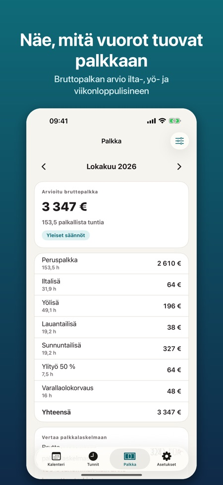
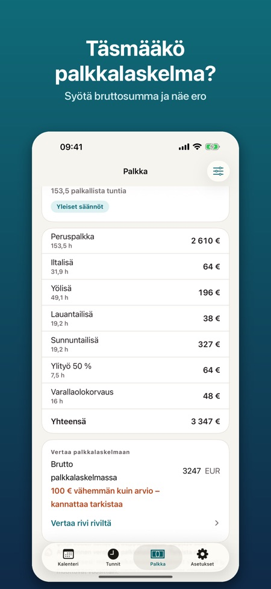
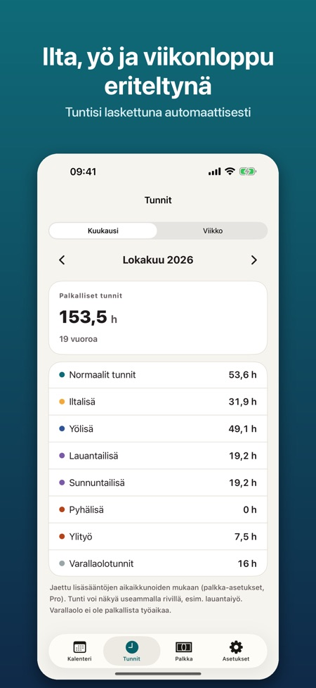

Vuorot, lisät ja tunnit. Lisää vuorokiertosi sekunneissa ja näe tunnit jaettuna iltaan, yöhön, viikonloppuun ja pyhäpäiviin. Prolla: arvio bruttopalkasta lisineen palkkalaskelman tarkistamiseen.



Sovellus vuorotyötä tekeville, kuten sairaanhoitajille, lähihoitajille, poliiseille, kaupan, hotelli- ja ravintola-alan sekä varastojen työntekijöille ja osa-aikatyötä tekeville opiskelijoille. Suunnittele vuorosi, näe tuntisi ja tarkista, että palkkalaskelma täsmää.
KALENTERI JA VUOROKIERTO
• Omat vuorotyypit värillä, alku- ja loppuajalla sekä palkattomalla tauolla (aamu, ilta, yö, pitkä päivä, varallaolo, vapaa)
• Kuukausi- ja viikkonäkymä: valitse vuoro ja napauta päiviä
• 1–8 viikon vuorokierto jopa kahdeksi vuodeksi eteenpäin
• Kopioi viikko, vaihda kahden päivän vuorot, lisää muistiinpanoja ja ylityö
• Suomen, Norjan ja Tanskan pyhäpäivät lasketaan sovelluksessa (myös pääsiäinen, helatorstai, juhannus ja pyhäinpäivä)
• Muistutus ennen vuoroa
TUNNIT
• Tunnit viikoittain ja kuukausittain: normaalit tunnit, ilta, yö, lauantai, sunnuntai, pyhä, ylityö ja varallaolo
• Keskiyön yli menevät vuorot ja kesä-/talviaikaan siirtyminen lasketaan oikein
PRO
• Arvio kuukauden bruttopalkasta erittelyineen, jota voit verrata palkkalaskelmaan
• Syötä palkkalaskelman bruttosumma ja näe ero arvioon
• Tunti- tai kuukausipalkka ja itse määrittämäsi lisät: euroa tunnilta tai % tuntipalkasta, aikaikkunalla ja viikonpäivillä
• Ylityö 50 % ja 100 %, päiväkohtaisesti tai tietyn tuntimäärän jälkeen vuorossa
• Pohjat yleisten sopimusten lisien nimillä (Sote-sopimus, KVTES, Norjan KS ja Spekter, Tanskan alueet ja kunnat). Määriä ei ole valmiina: syötät luvut omasta sopimuksestasi
• Vienti Apple Kalenteriin, .ics-tiedostona tai kuvana
• Widget: seuraava vuoro ja kuukauden tunnit
Pro on saatavilla vuositilauksena tai kertaostona pysyvästi. Vuositilaus uusiutuu automaattisesti, kunnes peruutat sen Apple ID -asetuksissa viimeistään 24 tuntia ennen jakson päättymistä.
Ei tiliä, ei mainoksia. Kaikki tallentuu puhelimeen ja toimii ilman verkkoyhteyttä.
Palkka on arvio ennen veroja, ei palkkalaskelma. Sovellus on riippumaton eikä liity mihinkään työnantajaan, ammattiliittoon, työnantajajärjestöön tai viranomaiseen.